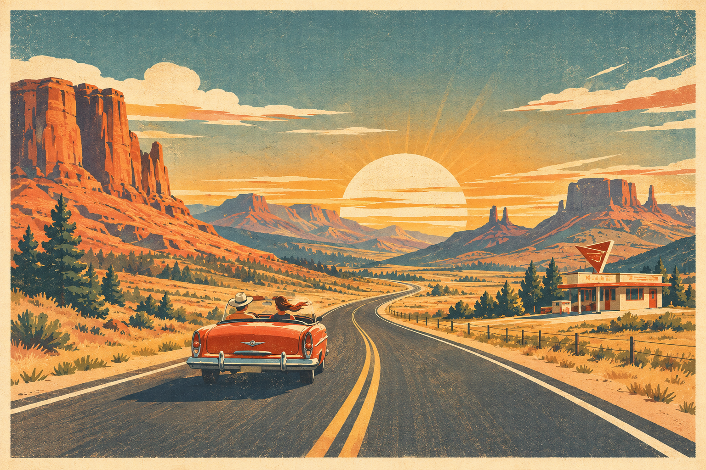

America is
waiting out there.
From the Pacific coast to the Atlantic shore, from mountain towns to desert crossroads — there are fifty state capitals to discover.
TUESDAY, NOVEMBER 24, 2026
Every day, a new destination. Follow the clues, read the map, and find the capital hiding somewhere across America.

From the Pacific coast to the Atlantic shore, from mountain towns to desert crossroads — there are fifty state capitals to discover.
Every solved city becomes a postcard in your personal atlas.
THE AMERICAN ATLAS JOURNAL
City stories, state portraits, and roads worth taking the long way for.
TODAY’S EDITION
Somewhere across the United States, one state capital is waiting. Pick a city and let the clues guide you.
Choose a city. We’ll tell you how far away you are.
YOUR FIELD GUIDE
Fifty states, fifty capital cities, and a whole lot of ground in between.
NOTES FROM THE OPEN ROAD
Three ways to travel beyond the answer: the stories behind the capitals, the character of each state, and the long roads that connect them.
THE CITY NOTEBOOK
Every capital has a story that doesn't fit on a road sign. Start with a few notes from the places that make America.
A CLOSER LOOK AT THE MAP
Fifty states, fifty different characters. Choose a state and get to know its capital, region, and defining details.
TAKE THE SCENIC ROUTE
Not every journey is about getting there quickly. Some roads are worth taking for everything you find along the way.
A CLASSIC AMERICAN CROSSING
Route 66 links the Midwest to the Pacific, passing through small towns, open plains, desert country, and the edge of the ocean. This is a sampler of its changing scenery—not turn-by-turn navigation.
THE POSTCARD WALL
Every capital you find earns a place in your growing American atlas.
Your first postcard is just around the bend. Play today’s trip to collect it.